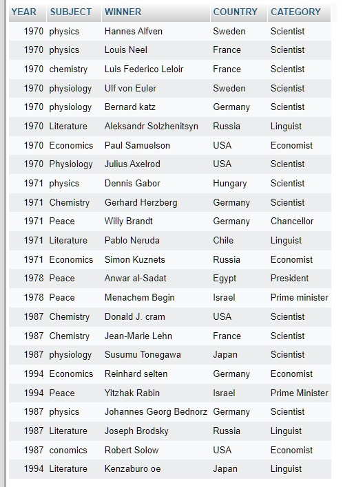
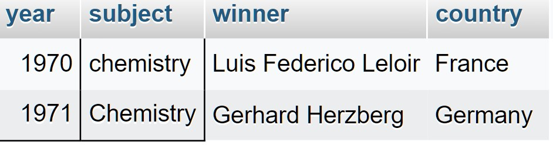
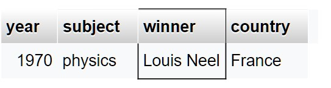
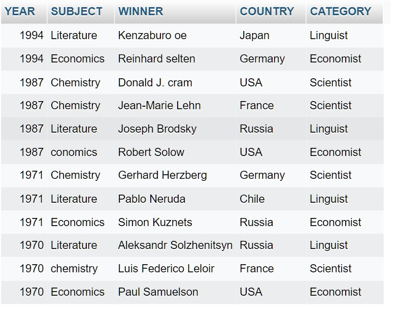

SQL- ASSESMENT
sql -table
Table Name = nob_win

Write sql query to find the nobel prize winners of the year 1970. Return year,subject
and winner
ANSWER
SELECT year,subject,winner FROM nob_win
WHERE year = 1970;

Write sql query to find the nobel prize winners in chemistry between the years 1965
and 1975. Begin and end values are includedReturn year, subject, winner and
countr
ANSWER
SELECT year,subject,winner,country FROM nob_win WHERE subject ='Chemistry'AND year>=1965 AND year<=1975;

Write sql query to retrieve the details of the winners whose first name matches with
the string ‘Louis’. Return year,subject,winner,countr
ANSWER
SELECT year, subject, winner, country FROM nob_win WHERE winner LIKE 'Louis %';

Write sql query to find Nobel prize winners for the subject that does not begin with
the letter ‘P’. Order the result by year, descending and winner in ascending
ANSWER
SELECT * FROM nob_win WHERE subject NOT LIKE 'P%' ORDER BY year DESC, winner;

Write sql query to find the details of 1970 Nobel prize winners. Order the result by
subject, ascending except for ‘Chemistry’ and ‘Economics’ which will come at the
end of the result set. Return year, subject, winner , country and category.
ANSWER
SELECT year, subject, winner, country, categoryFROM nob_win WHERE year = 1970 ORDER BY CASE WHEN subject='Chemistry' THEN 2 WHEN subject='Economics'THEN 3 ELSE 1 END,subject ASC;

🙏🙏----COMPLETED----🙏🙏